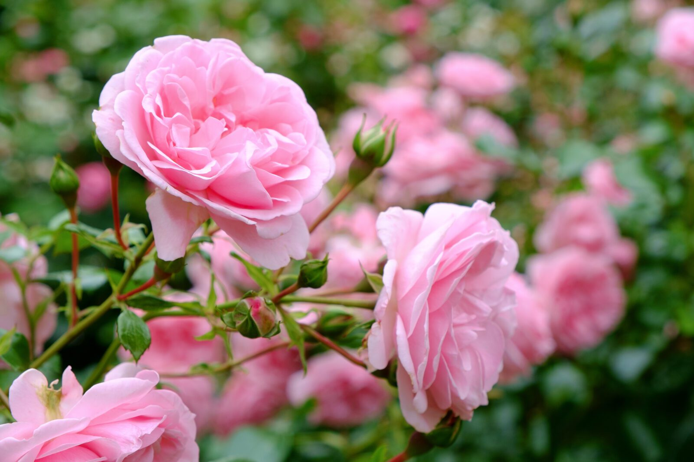
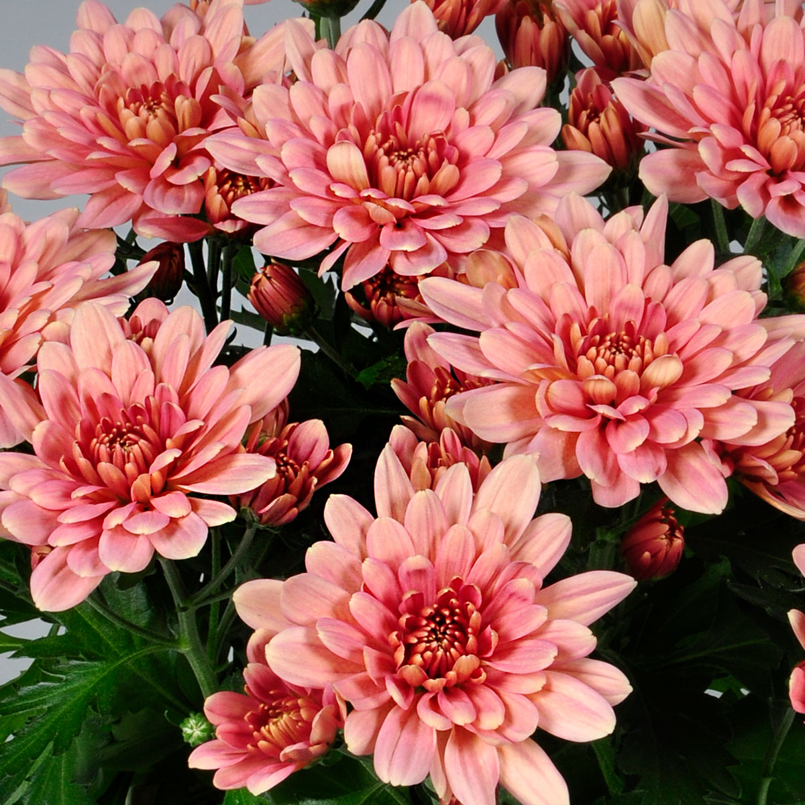
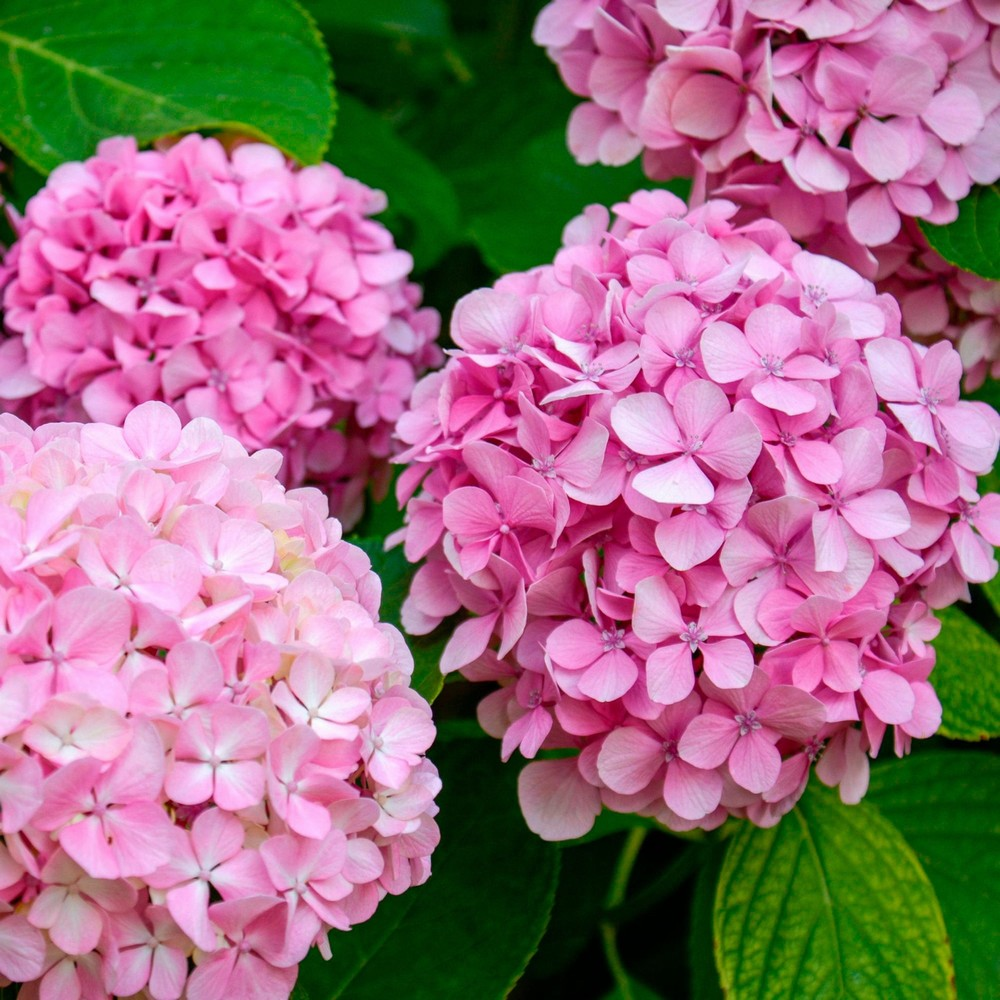

Roses
Most species of roses are native to the conitent of Asia however a couple of them call North America and Europe their home as well. Known for their many different colors, people assosiate roses with many different emotions such as a red rose for love or a a white one for trust. Despite their populatiry in modern times, roses are some of the oldest flowers to exist on Earth with their earliest fossile records dating as far back as 35 million years ago!

Chrysanthemum
Chrysanthemums, or mums for short, are known as a flower of friendship and hapiness. These flowers are native to Asia and Northeastern Europe where they are enjoyed for their vibrant colors and medical properties. It is said that drinking tea from Chrysanthemums is a good way to calm down your mind and lower blood preasure levels.

Hydrangea
Hydrangeas are flowers often found growing near streams and rocky areas in Asia and the Americas. These natural pH indicators turn blue in acidic soil and are a thought to mean abundance for there anundance of petals and shades of purple and blue.